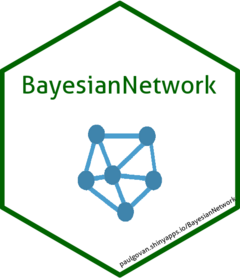

BayesianNetwork 0.3.2
Source:news.md
BayesianNetwork 0.2
Minor improvements and bug fixes
- Parameter learning methods no longer return error.
-
BayesianNetwork()now has the same UI locally as on shinyapps.io.
news.md
BayesianNetwork() now has the same UI locally as on shinyapps.io.